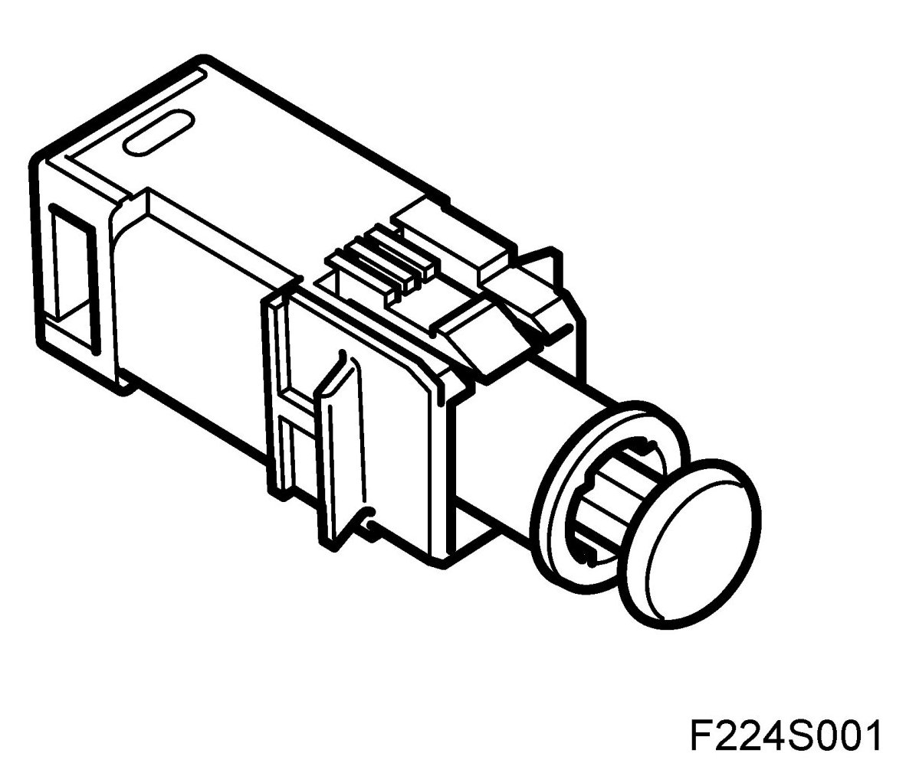
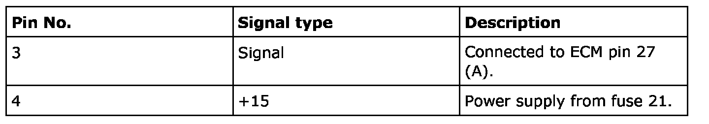
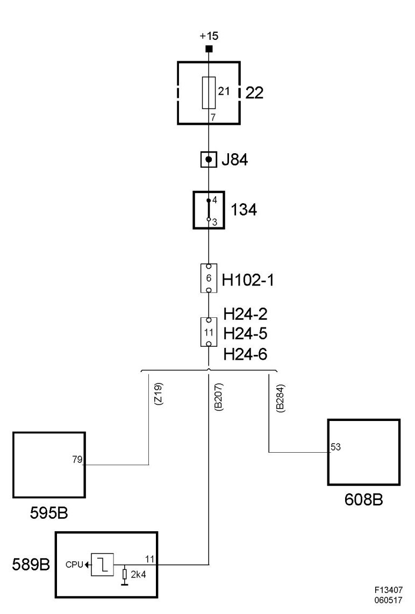

Brake Switch, Cruise Control (134), T8
Brake Switch, Cruise Control (134), T8
Location
Brake switch, cruise control (134)
Main task
The control module uses brake switch information to disengage cruise control.
Type
The switch opens when the pedal is depressed.

Connection

When the brake pedal is depressed, B+ to the control module pin 27(A) is interrupted, at which point the control module pin drops to ground potential.
Diagram
